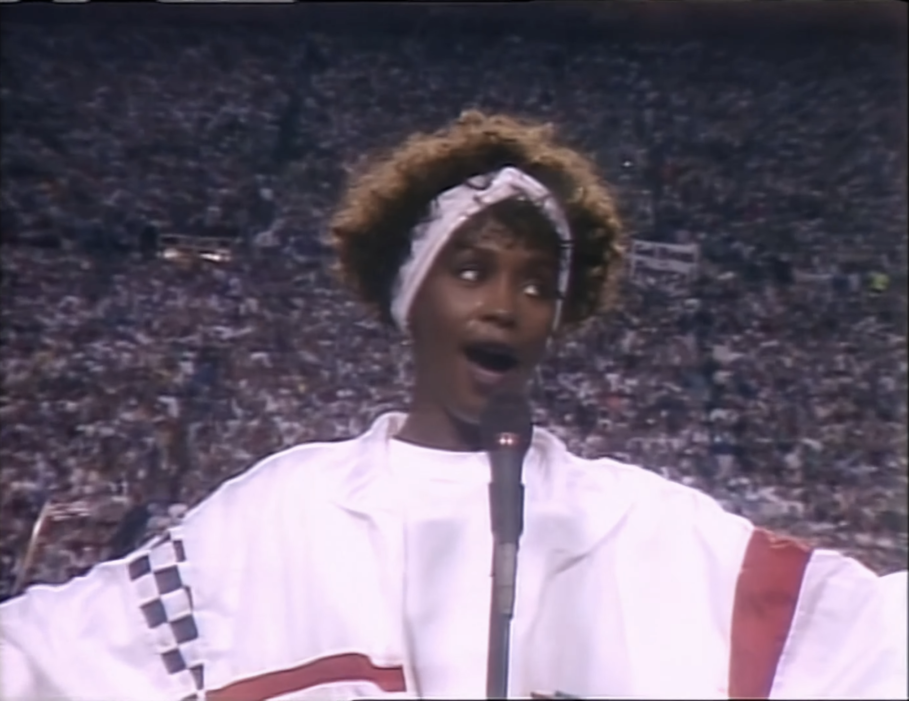

Day 82

Whitney Houston ◆ Star Spangled Banner ◆ 1991
今天看油管被推送了一条爵士音乐家 Arturo Sandoval 演奏美国国歌的视频，让我想起来 Whitney Houston 的演出，所以找来重温了一遍，非常感动。还重温了一遍 Vox 做的一期美国国歌的视频，也很感动！Whitney 的演唱的国歌可能是最有名的版本了。视频里 Whitney 风华正茂，活力四射，尽情施放才华1，非常精彩！
Vox 的视频，Why the US national anthem is terrible — and perfect，提出的观点是，虽然美国国歌太难，一般人根本唱不好，但这正是它的魅力所在：难度高也意味着好的演出无比传奇美妙（比如 Whiteney 的演出），而且紧张刺激，和一般唱国歌的场合——最盛大的运动会之前——非常契合。至于说国歌应该每个人都能唱：什么时候需要一般人唱国歌？唱不好就唱不好。此外，公共场合唱坏了反而很搞笑，也没什么不好，俺们美国人最喜欢公开社死的桥段哩。
我觉得很有道理，难度是大了点，但是唱好了也是真的好，非常华丽优美。Vox 的视频最后还有一段篮球教练搭救比赛之前上场唱国歌的年轻女孩的片段，感觉很可爱，很有生活的感动。我一下就联想到音乐联系着每一个人，联想到现如今中国人讨厌美国人，全世界人讨厌中国人，联想到天下大部分人都是可爱的或者总有些有可爱的地方，联想到希望人们能互相理解，感受音乐的美好，互相鼓励喝彩，就像视频里教练搭救年轻的演唱者，演唱者越唱越自信顺畅，观众的喝彩越来越高。美好！感动！

Say, can you see
By the dawn’s early light
What so proudly we hailed
At the twilight's last gleaming?
Whose broad stripes and bright stars
Through the perilous fight
O'er the ramparts we watched,
Were so gallantly, yeah, streaming?
And the rockets’ red glare
The bombs bursting in air
Gave proof through the night
That our flag was still there
O say, does that star-spangled banner yet wave
O’er the land of the free and the home of the brave